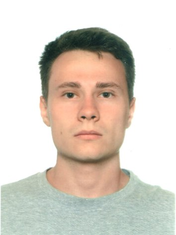

Обо мне
- Баранов Александр Андреевич, 24 года
- Место проживания: Москва
- Телефон: +7 (985) 777-41-31
- Email: alexandr_ba@list.ru
Образование
2012 - Настоящее время
- МГТУ им. Н.Э. Баумана:
2 курс магистратуры (окончание 2018 г.)
- Факультет: Энергомашиностроение
- Кафедра: Теплофизика и ядерная энергетика
- Тема диплома: Численное исследование устойчивости горения
в твердотопливном прямоточном воздушно-реактивном двигателе
Опыт работы
Сентбрь 2016 - Настоящее время
- Институт Проблем Механики им. А.Ю.
Ишлинского Российской Академии Наук
- Подразделение: Лаборатория термогазодинамики и горения
- Должность: Инженер
- Участие в научно-исследовательском проекте РФФИ
"Стабилизация горения в проточном тракте твердотопливного
прямоточного воздушно-реактивного двигателя"
Достижения
Научные публикации
- S.A.Rashkovskiy, S.E.Yakush, A.A.Baranov.
Stabilization of solid fuel combustion in a ramjet engine.
// Journal of Physics: Conference Series, 2017 (Scopus, Web of Science)
- С.А.Рашковский, С.Е.Якуш, А.А.Баранов.
Моделирование твердотопливного прямоточного воздушно-реактивного двигателя
со стабилизатором горения.
// Горение и взрыв, 2017 (РИНЦ)
- S.A.Rashkovskiy, S.E.Yakush, A.A.Baranov.
Numerical simulation of solid-fuel ramjet combustor with a flame holder.
// 7th European Conference for Aeronautics and Space Sciences, 2017 (EUCASS)
Выступления на конференциях
- 10-я Всероссийская школа-семинар «Аэрофизика и физическая механика классических
и квантовых систем»
АФМ-2016, г. Москва, 5-9 декабря 2016 года, устный доклад
- 10-я Научная конференция по горению и взрыву
ИХФ РАН, г. Москва, 8-10 февраля 2017 г, устный доклад
- 11-я Всероссийская школа-семинар «Аэрофизика и физическая механика классических
и квантовых систем»
АФМ-2017, г. Москва, 21-24 ноября 2017 года, устный доклад
Профессиональные навыки
- Технический английский (Intermediate)
- Языки программирования: Python (Tkinter, NumPy), Fortran
- Web: HTML/CSS
Хобби и увлечения
- Варю настольные лампы
- Изучаю философию